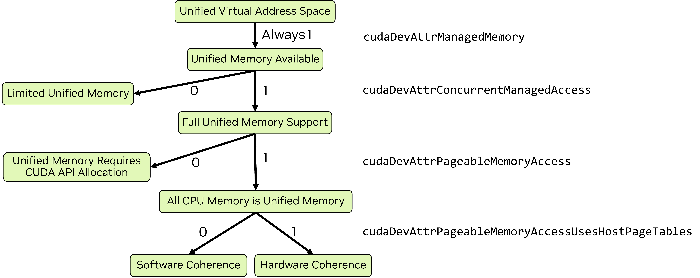

이기종 시스템에는 데이터를 저장할 수 있는 여러 물리 메모리가 있습니다. 호스트 CPU에는 DRAM이 연결되어 있고, 시스템의 각 GPU에는 자체적으로 연결된 DRAM이 있습니다. 성능은 데이터가 이를 액세스하는 프로세서의 메모리에 상주할 때 가장 좋습니다. CUDA는 명시적으로 메모리 배치를 관리하기 위한 API를 제공하지만, 이는 장황할 수 있고 소프트웨어 설계를 복잡하게 만들 수 있습니다. CUDA는 서로 다른 물리 메모리 간 데이터의 할당, 배치 및 마이그레이션을 용이하게 하는 것을 목표로 하는 기능과 역량을 제공합니다.
이 장의 목적은 이러한 기능을 소개하고 설명하며, 기능과 성능 측면에서 애플리케이션 개발자에게 그것들이 무엇을 의미하는지 설명하는 것입니다. 통합 메모리는 OS, 드라이버 버전, 사용되는 GPU에 따라 여러 가지 서로 다른 형태로 나타납니다. 이 장에서는 어떤 통합 메모리 패러다임이 적용되는지와 각 패러다임에서 통합 메모리의 기능이 어떻게 동작하는지를 확인하는 방법을 보여줍니다. 이후의 통합 메모리 장에서는 통합 메모리를 더 자세히 설명합니다.
이 장에서는 다음 개념을 정의하고 설명합니다:
통합 가상 주소 공간 - CPU 메모리와 각 GPU의 메모리는 단일 가상 주소 공간 내에서 서로 구별되는 범위를 가집니다
통합 메모리 - CPU와 GPU 간에 자동으로 마이그레이션될 수 있는 관리형 메모리를 가능하게 하는 CUDA 기능
제한된 통합 메모리 - 일부 제약이 있는 통합 메모리 패러다임
완전한 통합 메모리 - 통합 메모리 기능에 대한 완전한 지원
하드웨어 일관성을 갖춘 완전한 통합 메모리 - 하드웨어 역량을 사용한 통합 메모리의 완전한 지원
통합 메모리 힌트 - 특정 할당에 대해 통합 메모리 동작을 안내하는 API
페이지 고정 호스트 메모리 - 페이지 아웃할 수 없는 시스템 메모리로, 일부 CUDA 작업에 필요합니다
매핑된 메모리 - 커널에서 호스트 메모리에 직접 액세스하기 위한 메커니즘(통합 메모리와는 다름)
또한, 통합 메모리 및 시스템 메모리를 논의할 때 사용되는 다음 용어를 여기에서 소개합니다:
이기종 관리형 메모리 (HMM) - 완전한 통합 메모리를 위한 소프트웨어 일관성을 가능하게 하는 Linux 커널 기능
주소 변환 서비스 (ATS) - GPU가 NVLink 칩-투-칩(C2C) 인터커넥트로 CPU에 연결될 때 사용할 수 있는 하드웨어 기능으로, 완전한 통합 메모리를 위한 하드웨어 일관성을 제공합니다
2.4.1. 통합 가상 주소 공간#
단일 OS 프로세스 내에서 시스템의 모든 호스트 메모리와 모든 GPU의 모든 전역 메모리에 대해 단일 가상 주소 공간이 사용됩니다. 호스트와 모든 디바이스에서의 모든 메모리 할당은 이 가상 주소 공간에 속합니다. 이는 할당이 CUDA API(예: cudaMalloc, cudaMallocHost) 또는 시스템 할당 API(예: new, malloc, mmap). CPU와 각 GPU는 통합 가상 주소 공간 내에서 고유한 범위를 가집니다.
이는 다음을 의미합니다:
어떤 메모리의 위치(즉, CPU인지 또는 어느 GPU의 메모리에 있는지)는 포인터 값으로부터 다음을 사용하여 결정할 수 있습니다
cudaPointerGetAttributes()이
cudaMemcpyKind의 매개변수cudaMemcpy*()로 설정할 수 있습니다cudaMemcpyDefault포인터로부터 복사 유형을 자동으로 결정하기 위해
2.4.2. 통합 메모리#
통합 메모리는 관리형 메모리라고 불리는 메모리 할당을 CPU 또는 GPU에서 실행되는 코드 어느 쪽에서든 액세스할 수 있게 해주는 CUDA 메모리 기능입니다. 통합 메모리는 C++의 CUDA 소개에서 보여주었습니다. 통합 메모리는 CUDA가 지원하는 모든 시스템에서 사용할 수 있습니다.
일부 시스템에서는 관리형 메모리를 명시적으로 할당해야 합니다. 관리형 메모리는 CUDA에서 몇 가지 서로 다른 방법으로 명시적으로 할당할 수 있습니다:
CUDA API
cudaMallocManagedCUDA API
cudaMallocFromPoolAsync(을)를 사용하되,allocType이(가)cudaMemAllocationTypeManaged로 설정된 풀로 생성된 경우__managed__지정자(specifier)를 사용하는 전역 변수(자세한 내용은 메모리 공간 지정자 참조)
HMM 또는 ATS가 있는 시스템에서는, 할당 방식과 관계없이 모든 시스템 메모리가 암묵적으로 관리형 메모리입니다. 특별한 할당은 필요하지 않습니다.
2.4.2.1. 통합 메모리 패러다임#
통합 메모리의 기능과 동작은 운영 체제, Linux의 커널 버전, GPU 하드웨어, 그리고 GPU-CPU 인터커넥트에 따라 달라집니다. 사용 가능한 통합 메모리의 형태는 cudaDeviceGetAttribute를 사용하여 몇 가지 속성을 조회함으로써 결정할 수 있습니다:
cudaDevAttrConcurrentManagedAccess- 완전한 통합 메모리 지원은 1, 제한된 지원은 0cudaDevAttrPageableMemoryAccess- 1은 모든 시스템 메모리가 완전히 지원되는 통합 메모리임을 의미하고, 0은 관리형 메모리로 명시적으로 할당된 메모리만 완전히 지원되는 통합 메모리임을 의미합니다cudaDevAttrPageableMemoryAccessUsesHostPageTables- CPU/GPU 일관성(coherence) 메커니즘을 나타냅니다: 1은 하드웨어, 0은 소프트웨어입니다.
그림 18은 통합 메모리 패러다임을 시각적으로 결정하는 방법을 보여주며, 동일한 로직을 구현한 코드 샘플이 뒤따릅니다.
통합 메모리 동작에는 네 가지 패러다임이 있습니다:
완전한 지원이 제공되는 경우, 명시적 할당이 필요할 수도 있고 모든 시스템 메모리가 암묵적으로 통합 메모리일 수도 있습니다. 모든 메모리가 암묵적으로 통합되는 경우, 일관성 메커니즘은 소프트웨어 또는 하드웨어일 수 있습니다. Windows와 일부 Tegra 디바이스는 통합 메모리에 대해 제한된 지원을 제공합니다.
{kind=link}

Figure 18 현재의 모든 GPU는 통합 가상 주소 공간을 사용하며 통합 메모리를 사용할 수 있습니다. cudaDevAttrConcurrentManagedAccess이 1이면 완전한 통합 메모리 지원을 사용할 수 있으며, 그렇지 않으면 제한된 지원만 사용할 수 있습니다. 완전한 지원이 제공되는 경우, cudaDevAttrPageableMemoryAccess 역시 1이면 모든 시스템 메모리가 통합 메모리입니다. 그렇지 않으면 cudaMallocManaged과 같은 CUDA API로 할당된 메모리만 통합 메모리입니다. 모든 시스템 메모리가 통합된 경우, cudaDevAttrPageableMemoryAccessUsesHostPageTables은 일관성이 하드웨어(값이 1인 경우)로 제공되는지 또는 소프트웨어(값이 0인 경우)로 제공되는지를 나타냅니다.#
표 3은(는) 그림 18과 동일한 정보를 표 형태로 보여주며, 이 장의 관련 섹션과 이 가이드의 이후 섹션에 있는 더 완전한 문서로 연결되는 링크를 포함합니다.
통합 메모리 패러다임 |
디바이스 속성 |
전체 문서 |
|---|---|---|
cudaDevAttrConcurrentManagedAccess is 0 |
||
cudaDevAttrPageableMemoryAccess is 0and
cudaDevAttrConcurrentManagedAccess is 1 |
||
cudaDevAttrPageableMemoryAccessUsesHostPageTables is 0and
cudaDevAttrPageableMemoryAccess is 1and
cudaDevAttrConcurrentManagedAccess is 1 |
||
cudaDevAttrPageableMemoryAccessUsesHostPageTables is 1and
cudaDevAttrPageableMemoryAccess is 1and
cudaDevAttrConcurrentManagedAccess is 1 |
2.4.2.1.1. 통합 메모리 패러다임: 코드 예제#
다음 코드 예제는 시스템의 각 GPU에 대해 그림 18의 로직을 따라, 디바이스 속성을 조회하고 통합 메모리 패러다임을 결정하는 과정을 보여줍니다.
void queryDevices()
{
int numDevices = 0;
cudaGetDeviceCount(&numDevices);
for(int i=0; i<numDevices; i++)
{
cudaSetDevice(i);
cudaInitDevice(0, 0, 0);
int deviceId = i;
int concurrentManagedAccess = -1;
cudaDeviceGetAttribute (&concurrentManagedAccess, cudaDevAttrConcurrentManagedAccess, deviceId);
int pageableMemoryAccess = -1;
cudaDeviceGetAttribute (&pageableMemoryAccess, cudaDevAttrPageableMemoryAccess, deviceId);
int pageableMemoryAccessUsesHostPageTables = -1;
cudaDeviceGetAttribute (&pageableMemoryAccessUsesHostPageTables, cudaDevAttrPageableMemoryAccessUsesHostPageTables, deviceId);
printf("Device %d has ", deviceId);
if(concurrentManagedAccess){
if(pageableMemoryAccess){
printf("full unified memory support");
if( pageableMemoryAccessUsesHostPageTables)
{ printf(" with hardware coherency\n"); }
else
{ printf(" with software coherency\n"); }
}
else
{ printf("full unified memory support for CUDA-made managed allocations\n"); }
}
else
{ printf("limited unified memory support: Windows, WSL, or Tegra\n"); }
}
}
2.4.2.2. 완전한 통합 메모리 기능 지원#
대부분의 Linux 시스템은 완전한 통합 메모리 지원을 제공합니다. 디바이스 속성 cudaDevAttrPageableMemoryAccess이 1이면, CUDA API 또는 시스템 API로 할당되었는지 여부와 관계없이 모든 시스템 메모리가 완전한 기능 지원을 갖춘 통합 메모리로 동작합니다. 여기에는 mmap로 생성된 파일 백드(file-backed) 메모리 할당도 포함됩니다.
cudaDevAttrPageableMemoryAccess이 0이면, CUDA에서 관리형 메모리로 할당된 메모리만 통합 메모리로 동작합니다. 시스템 API로 할당된 메모리는 관리되지 않으며, 반드시 GPU 커널에서 접근 가능하다고 보장되지도 않습니다.
일반적으로, 완전한 지원이 있는 통합 할당의 경우:
관리형 메모리는 일반적으로 처음 접근되는 프로세서의 메모리 공간에 할당됩니다
관리형 메모리는 일반적으로 현재 상주해 있는 프로세서가 아닌 다른 프로세서에서 사용될 때 마이그레이션됩니다
관리형 메모리는 메모리 페이지 단위(소프트웨어 일관성) 또는 캐시 라인 단위(하드웨어 일관성)로 마이그레이션되거나 접근됩니다
오버서브스크립션이 허용됩니다: 애플리케이션은 GPU에서 물리적으로 사용 가능한 양보다 더 많은 관리형 메모리를 할당할 수 있습니다
할당 및 마이그레이션 동작은 위 내용과 달라질 수 있습니다. 이는 프로그래머가 힌트 및 프리페치를 사용하여 영향을 줄 수 있습니다. 완전한 통합 메모리 지원에 대한 전체 내용은 완전한 CUDA 통합 메모리 지원이 있는 디바이스에서의 통합 메모리에서 확인할 수 있습니다.
2.4.2.2.1. 하드웨어 일관성을 갖춘 완전한 통합 메모리#
Grace Hopper 및 Grace Blackwell과 같이 NVIDIA CPU가 사용되고 CPU와 GPU 간의 인터커넥트가 NVLink 칩-투-칩(C2C)인 하드웨어에서는 주소 변환 서비스(ATS)를 사용할 수 있습니다. ATS를 사용할 수 있을 때 cudaDevAttrPageableMemoryAccessUsesHostPageTables는 1입니다.
ATS를 사용하면, 모든 호스트 할당에 대한 완전한 통합 메모리 지원 외에도:
GPU 할당(예:
cudaMalloc)은 CPU에서 접근할 수 있습니다(cudaDevAttrDirectManagedMemAccessFromHost는 1이 됩니다)CPU와 GPU 간 링크는 네이티브 원자 연산(atomic)을 지원합니다(
cudaDevAttrHostNativeAtomicSupported는 1이 됩니다)일관성에 대한 하드웨어 지원은 소프트웨어 일관성에 비해 성능을 향상시킬 수 있습니다
ATS는 HMM의 모든 기능을 제공합니다. ATS를 사용할 수 있으면 HMM은 자동으로 비활성화됩니다. 하드웨어 일관성과 소프트웨어 일관성 비교에 대한 추가 논의는 CPU 및 GPU 페이지 테이블: 하드웨어 일관성 vs. 소프트웨어 일관성에서 확인할 수 있습니다.
2.4.2.2.2. HMM - 소프트웨어 일관성을 갖춘 완전한 통합 메모리#
이기종 메모리 관리(HMM)는 (적절한 커널 버전이 있는) Linux 운영체제에서 사용할 수 있는 기능으로, 소프트웨어 일관성을 갖춘 완전한 통합 메모리 지원을 가능하게 합니다. 이기종 메모리 관리는 ATS가 제공하는 일부 기능과 편의성을 PCIe로 연결된 GPU에 제공합니다.
Linux 커널 6.1.24, 6.2.11 또는 6.3 이상이 설치된 Linux에서는 이기종 메모리 관리(HMM)를 사용할 수 있을 수 있습니다. 다음 명령을 사용하여 주소 지정 모드가 HMM인지 확인할 수 있습니다.
$ nvidia-smi -q | grep Addressing
Addressing Mode : HMM
HMM을 사용할 수 있으면 완전한 통합 메모리가 지원되며 모든 시스템 할당은 암묵적으로 통합 메모리입니다. 또한 시스템에 ATS도 있으면, ATS가 HMM의 모든 기능과 그 이상을 제공하므로 HMM은 비활성화되고 ATS가 사용됩니다.
2.4.2.3. 제한된 통합 메모리 지원#
Linux용 Windows 하위 시스템(WSL)을 포함한 Windows와 일부 Tegra 시스템에서는 통합 메모리 기능의 제한된 하위 집합을 사용할 수 있습니다. 이러한 시스템에서는 관리형 메모리를 사용할 수 있지만, CPU와 GPU 간 마이그레이션 동작이 다르게 동작합니다.
관리형 메모리는 처음에 CPU의 물리 메모리에 할당됩니다
관리형 메모리는 가상 메모리 페이지보다 더 큰 단위로 마이그레이션됩니다
관리형 메모리는 GPU가 실행을 시작할 때 GPU로 마이그레이션됩니다
GPU가 활성 상태인 동안 CPU는 관리형 메모리에 접근해서는 안 됩니다
GPU가 동기화되면 관리형 메모리는 CPU로 다시 마이그레이션됩니다
GPU 메모리 오버서브스크립션은 허용되지 않습니다
CUDA가 관리형 메모리로 명시적으로 할당한 메모리만 통합됩니다
이 패러다임에 대한 전체 내용은 Windows, WSL 및 Tegra에서의 통합 메모리에서 확인할 수 있습니다.
2.4.2.4. 메모리 어드바이스 및 프리페치#
프로그래머는 통합 메모리를 관리하는 NVIDIA 드라이버에 힌트를 제공하여 애플리케이션 성능을 최대화하도록 도울 수 있습니다. CUDA API cudaMemAdvise를 사용하면 프로그래머가 할당의 속성을 지정할 수 있으며, 이는 메모리가 어디에 배치되는지와 다른 디바이스에서 접근될 때 메모리가 마이그레이션되는지 여부에 영향을 줍니다.
cudaMemPrefetchAsync를 사용하면 프로그래머가 특정 할당을 다른 위치로 비동기 마이그레이션하도록 시작할 것을 제안할 수 있습니다. 일반적인 사용 사례는 커널이 런치되기 전에 커널이 사용할 데이터의 전송을 시작하는 것입니다. 이를 통해 다른 GPU 커널이 실행되는 동안 데이터 복사가 발생할 수 있습니다.
성능 힌트 섹션에서는 cudaMemAdvise에 전달할 수 있는 다양한 힌트를 다루고, cudaMemPrefetchAsync를 사용하는 예제를 보여줍니다.
2.4.3. 페이지 고정 호스트 메모리#
C++의 CUDA 소개 코드 예제에서는 CPU에서 메모리를 할당하기 위해 cudaMallocHost를 사용했습니다. 이는 호스트에서 페이지 고정 메모리(또는 pinned 메모리라고도 함)를 할당합니다. malloc, new, 또는 mmap 같은 전통적인 할당 메커니즘으로 이루어진 호스트 할당은 페이지 고정이 아니며, 이는 운영체제가 디스크로 스왑하거나 물리적으로 재배치할 수 있음을 의미합니다.
페이지 고정 호스트 메모리는 CPU와 GPU 간 비동기 복사에 필요합니다. 또한 페이지 고정 호스트 메모리는 동기 복사의 성능도 향상시킵니다. 페이지 고정 메모리는 GPU 커널에서 직접 접근할 수 있도록 GPU에 매핑될 수 있습니다.
CUDA 런타임은 페이지 고정 호스트 메모리를 할당하거나 기존 할당을 페이지 고정하기 위한 API를 제공합니다:
cudaMallocHost는 페이지 고정 호스트 메모리를 할당합니다cudaHostAlloc는 기본적으로cudaMallocHost와 동일하게 동작하지만, 다른 메모리 매개변수를 지정하기 위한 플래그도 받습니다cudaFreeHost는cudaMallocHost또는cudaHostAlloc로 할당된 메모리를 해제합니다cudaHostRegister는malloc또는mmap와 같이 CUDA API 외부에서 할당된 기존 메모리 범위를 페이지 고정합니다
cudaHostRegister를 사용하면 제3자 라이브러리 또는 개발자가 제어할 수 없는 다른 코드에 의해 할당된 호스트 메모리를 페이지 고정하여, 비동기 복사에 사용하거나 매핑할 수 있습니다.
참고
페이지 고정 호스트 메모리는 시스템의 모든 GPU에서 비동기 복사 및 매핑된 메모리에 사용할 수 있습니다.
페이지 고정 호스트 메모리는 I/O 비일관성 Tegra 디바이스에서는 캐시되지 않습니다. 또한 I/O 비일관성 Tegra 디바이스에서는 cudaHostRegister()가 지원되지 않습니다.
2.4.3.1. 매핑된 메모리#
HMM 또는 ATS가 있는 시스템에서는 모든 호스트 메모리에 호스트 포인터를 사용하여 GPU에서 직접 접근할 수 있습니다. ATS 또는 HMM을 사용할 수 없는 경우, 호스트 할당은 해당 메모리를 GPU의 메모리 공간으로 매핑하여 GPU에서 접근 가능하게 만들 수 있습니다. 매핑된 메모리는 항상 페이지 고정입니다.
다음 코드 예제에서는 매핑된 호스트 메모리에서 직접 동작하는 다음 배열 복사 커널을 설명합니다.
__global__ void copyKernel(float* a, float* b)
{
int idx = threadIdx.x + blockDim.x * blockIdx.x;
a[idx] = b[idx];
}
매핑된 메모리는 GPU로 복사되지 않는 특정 데이터를 커널에서 접근해야 하는 일부 경우에 유용할 수 있지만, 커널에서 매핑된 메모리에 접근하려면 CPU-GPU 인터커넥트, PCIe 또는 NVLink C2C를 가로지르는 트랜잭션이 필요합니다. 이러한 동작은 디바이스 메모리에 접근하는 것에 비해 더 높은 지연 시간과 더 낮은 대역폭을 가집니다. 매핑된 메모리는 커널의 대부분의 메모리 요구에 대해 통합 메모리 또는 명시적 메모리 관리의 성능 좋은 대안으로 간주되어서는 안 됩니다.
2.4.3.1.1. cudaMallocHost 및 cudaHostAlloc#
cudaHostMalloc 또는 cudaHostAlloc로 할당된 호스트 메모리는 자동으로 매핑됩니다. 이러한 API에서 반환된 포인터는 호스트의 메모리에 접근하기 위해 커널 코드에서 직접 사용할 수 있습니다. 호스트 메모리는 CPU-GPU 인터커넥트를 통해 접근됩니다.
void usingMallocHost() {
float* a = nullptr;
float* b = nullptr;
CUDA_CHECK(cudaMallocHost(&a, vLen*sizeof(float)));
CUDA_CHECK(cudaMallocHost(&b, vLen*sizeof(float)));
initVector(b, vLen);
memset(a, 0, vLen*sizeof(float));
int threads = 256;
int blocks = vLen/threads;
copyKernel<<<blocks, threads>>>(a, b);
CUDA_CHECK(cudaGetLastError());
CUDA_CHECK(cudaDeviceSynchronize());
printf("Using cudaMallocHost: ");
checkAnswer(a,b);
}
void usingCudaHostAlloc() {
float* a = nullptr;
float* b = nullptr;
CUDA_CHECK(cudaHostAlloc(&a, vLen*sizeof(float), cudaHostAllocMapped));
CUDA_CHECK(cudaHostAlloc(&b, vLen*sizeof(float), cudaHostAllocMapped));
initVector(b, vLen);
memset(a, 0, vLen*sizeof(float));
int threads = 256;
int blocks = vLen/threads;
copyKernel<<<blocks, threads>>>(a, b);
CUDA_CHECK(cudaGetLastError());
CUDA_CHECK(cudaDeviceSynchronize());
printf("Using cudaAllocHost: ");
checkAnswer(a, b);
}
2.4.3.1.2. cudaHostRegister#
ATS와 HMM을 사용할 수 없는 경우에도, 시스템 할당자가 만든 할당은 cudaHostRegister을 사용하여 GPU 커널에서 직접 접근할 수 있도록 매핑할 수 있습니다. 그러나 CUDA API로 생성된 메모리와는 달리, 이 메모리는 호스트 포인터를 사용하여 커널에서 접근할 수 없습니다. cudaHostGetDevicePointer()을 사용해 디바이스의 메모리 영역에 있는 포인터를 얻어야 하며, 커널 코드에서의 접근에는 그 포인터를 사용해야 합니다.
void usingRegister() {
float* a = nullptr;
float* b = nullptr;
float* devA = nullptr;
float* devB = nullptr;
a = (float*)malloc(vLen*sizeof(float));
b = (float*)malloc(vLen*sizeof(float));
CUDA_CHECK(cudaHostRegister(a, vLen*sizeof(float), 0 ));
CUDA_CHECK(cudaHostRegister(b, vLen*sizeof(float), 0 ));
CUDA_CHECK(cudaHostGetDevicePointer((void**)&devA, (void*)a, 0));
CUDA_CHECK(cudaHostGetDevicePointer((void**)&devB, (void*)b, 0));
initVector(b, vLen);
memset(a, 0, vLen*sizeof(float));
int threads = 256;
int blocks = vLen/threads;
copyKernel<<<blocks, threads>>>(devA, devB);
CUDA_CHECK(cudaGetLastError());
CUDA_CHECK(cudaDeviceSynchronize());
printf("Using cudaHostRegister: ");
checkAnswer(a, b);
}
2.4.3.1.3. 통합 메모리와 매핑된 메모리 비교#
매핑된 메모리는 CPU 메모리에 GPU에서 접근할 수 있게 해주지만, 예를 들어 원자 연산(atomic)과 같은 모든 유형의 접근이 모든 시스템에서 지원된다고 보장하지는 않습니다. 통합 메모리는 모든 접근 유형이 지원됨을 보장합니다.
매핑된 메모리는 CPU 메모리에 그대로 남아 있으므로, 모든 GPU 접근은 CPU와 GPU 간의 연결(PCIe 또는 NVLink)을 통해야 합니다. 이러한 링크를 가로질러 수행되는 접근의 지연 시간은 GPU 메모리에 대한 접근보다 훨씬 높고, 사용 가능한 총 대역폭은 더 낮습니다. 따라서 커널의 모든 메모리 접근에 매핑된 메모리를 사용하는 것은 GPU 컴퓨팅 자원을 완전히 활용하기 어렵습니다.
통합 메모리는 대부분 접근하는 프로세서의 물리 메모리로 마이그레이션됩니다. 첫 번째 마이그레이션 이후에는, 커널이 동일한 메모리 페이지 또는 캐시 라인에 반복해서 접근할 때 GPU 메모리의 전체 대역폭을 활용할 수 있습니다.
참고
매핑된 메모리는 이전 문서에서 제로-카피(zero-copy) 메모리로도 불렸습니다.
모든 CUDA 애플리케이션이 통합 가상 주소 공간을 사용하기 이전에는, 메모리 매핑을 활성화하기 위해 추가 API가 필요했습니다([[JcudaSetDeviceFlags with cudaDeviceMapHost). These APIs are no longer needed.
매핑된 호스트 메모리에서 동작하는 원자(atomic) 함수( Atomic Functions 참조)는 호스트 또는 다른 GPU의 관점에서는 원자적이지 않습니다.
CUDA 런타임은 디바이스에서 시작되어 호스트 메모리에 대해 수행되는 1바이트, 2바이트, 4바이트, 8바이트 및 16바이트 자연 정렬된 로드(load)와 스토어(store)가 호스트와 다른 디바이스의 관점에서 단일 접근으로 보존되도록 요구합니다. 일부 플랫폼에서는, 메모리에 대한 원자 연산(atomic)이 하드웨어에 의해 별도의 로드 및 스토어 연산으로 분해될 수 있습니다. 이러한 구성 로드 및 스토어 연산은 자연 정렬된 접근의 보존에 대해 동일한 요구 사항을 갖습니다. CUDA 런타임은 PCI Express 브리지가 8바이트 자연 정렬 연산을 분할하는 PCI Express 버스 토폴로지는 지원하지 않으며, NVIDIA는 16바이트 자연 정렬 연산을 분할하는 어떤 토폴로지도 알지 못합니다.
2.4.4. 요약#
이기종 메모리 관리(HMM) 또는 주소 변환 서비스(ATS)가 있는 Linux 플랫폼에서는, 시스템이 할당한 모든 메모리는 관리형 메모리입니다
HMM 또는 ATS가 없는 Linux 플랫폼, Tegra 프로세서, 그리고 모든 Windows 플랫폼에서는, 관리형 메모리를 CUDA를 사용하여 할당해야 합니다:
cudaMallocManaged또는cudaMallocFromPoolAsync(단,allocType=cudaMemAllocationTypeManaged으로 생성된 풀과 함께)__managed__지정자(specifier)가 있는 전역 변수
Windows 및 Tegra 프로세서에서는 통합 메모리에 제한이 있습니다
ATS가 있는 NVLINK C2C 연결 시스템에서는
cudaMalloc로 할당된 디바이스 메모리에 CPU 또는 다른 GPU에서 직접 접근할 수 있습니다